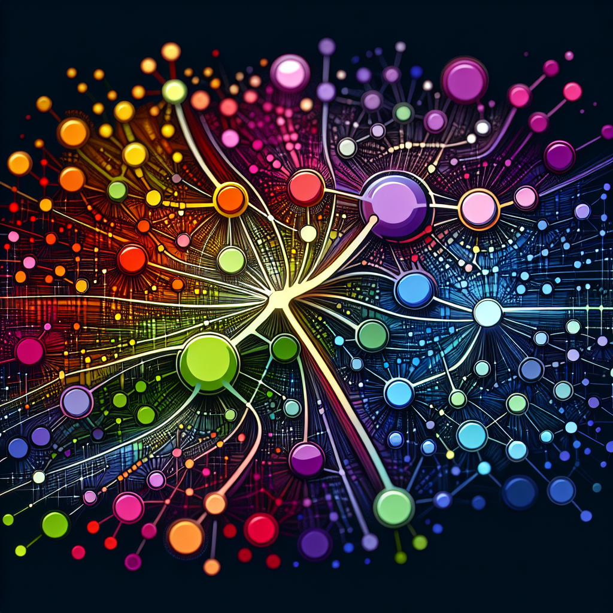
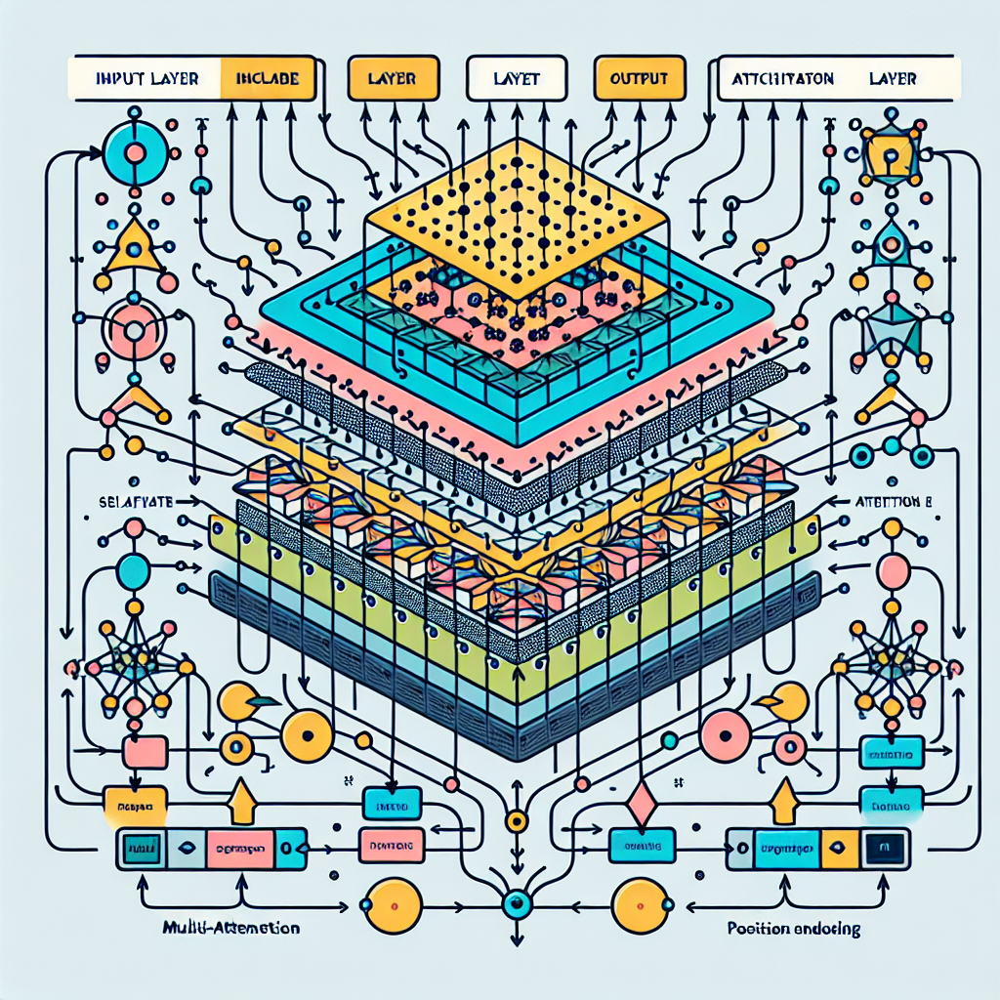
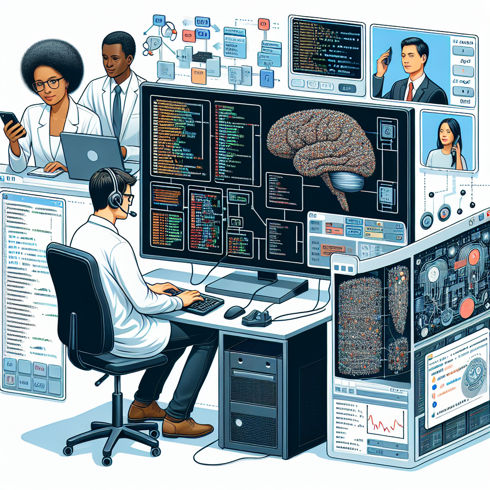
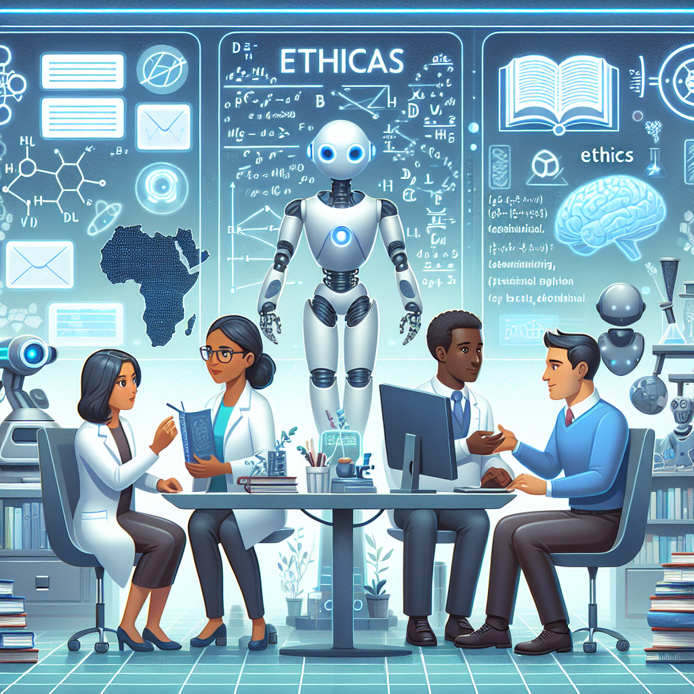

Large Language Models and Agents
This lecture explores the fascinating world of large language models (LLMs) and their applications as agents in various domains. We'll delve into the architecture, capabilities, and ethical considerations surrounding these powerful AI tools.
Introduction to Large Language Models
|  | Definition and overview of Large Language Models (LLMs).Historical context and evolution of LLMs.Key components and architecture of LLMs.Examples of LLMs: GPT-3, BERT, and T5. |
How LLMs Work
|  | Understanding the training process of LLMs.The role of transformers in LLMs.Sequence-to-sequence models explained.Fine-tuning LLMs for specific tasks. |
Applications of LLMs
|  | Natural Language Processing (NLP) tasks.Content generation and creative writing.Language translation and multilingual models.LLMs as conversational agents and chatbots. |
Ethical Considerations
|  | Bias and fairness in LLMs.Privacy concerns with training data.Misinformation and the role of LLMs.Future challenges and responsible AI. |
The Future of LLMs
| Advancements in model architecture.The potential for general AI through LLMs.Integrating LLMs with other AI technologies.Challenges and opportunities ahead. |